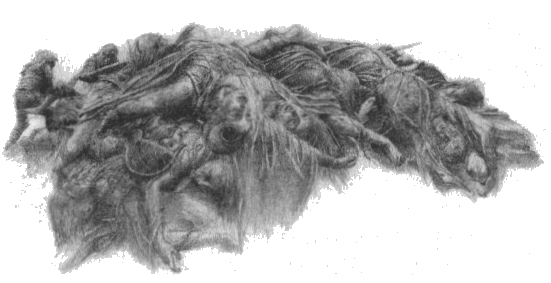

3
Sonra, Morgoth’un emri üzerine, orklar büyük zahmetle düşmanlarının cesetlerini, tüm koşum takımlarını ve silahlarını topladılar ve onları Anfauglith Ovası’nın ortasına yığdılar ve yığın, uzaklardan görülebilen büyük bir tepeye benzedi ve Eldar ona Haudh-en-Nirnaeth adını verdi. Ama oraya çimenler geldi ve o koca çölün ortasında, yalnızca o tepenin üzerinde, uzun ve yeşil büyüdü; ve ondan sonra Morgoth’un hiçbir hizmetkarı, Eldar’ın ve Edain’in kılıçlarının toprağın altında ufalanıp toza dönüştüğü o yere ayak basmadı. Artık Fingon’un ülkesi yoktu ve Fëanor’un oğulları rüzgara kapılmış yapraklar gibi savruldular. Hador Evi’nden hiçbir insan Hithlum’a dönmedi, savaştan ve beylerinin kaderlerinden haber de gelmedi. Ama Morgoth oraya kendi egemenliği altındaki insanlardan, karayağız Doğululardan gönderdi; ve onları o topraklara kapattı ve oradan ayrılmalarını yasakladı. Maedhros’a ihanet etmeleri karşılığında vaat ettiği zengin ödüllerden onlara verdiği tek şey bu oldu: Hador’un halkından ihtiyarları, çocukları ve kadınları taciz etmek ve yağmalamak. Hithlum Eldar’ından kalanların, yabana ve dağlara kaçmamış olanların hepsini Angband madenlerine aldı ve köle yaptı. Ama orklar kuzeyin tamamında serbestçe dolaşıyorlar, gittikçe daha güneye, Beleriand içlerine giriyorlardı. Doriath ve Nargothrond henüz oradaydı; ama Morgoth, ya onlardan pek haberi olmadığından, ya da kötücül planlarında onların saati henüz gelmediğinden, onlara pek dikkat etmiyordu. Ama düşünceleri devamlı Turgon’a dönüyordu.
Böylece, Húrin Morgoth’un huzuruna getirildi, çünkü Morgoth hileleri ve casusları sayesinde, Húrin’in Kral’la dostluğunu biliyordu; ve onu gözleriyle sindirmeye çalıştı. Ama Húrin sinmedi ve Morgoth’a meydan okudu. Bu yüzden Morgoth onu zincire vurdurttu ve ağır ağır işkence yaptırdı; ama bir süre sonra ona gitti ve Turgon’un Kalesi'nin yerini söylemesi ve Kral’ın öğütleri hakkında bildiği başka her şeyi açıklaması karşılığında, dilediği gibi gitmek ile Morgoth’un kumandanlarının en büyüğü olarak güç ve rütbe sahibi olmak arasında bir seçim önerdi. Ama Sadık Húrin onunla alay etti ve şöyle dedi: “Körsün sen, Morgoth Bauglir, ve her zaman kör olacak, yalnızca karanlığı göreceksin. İnsanların yüreklerine neyin hükmettiğini bilmiyorsun ve bilseydin de onu veremezdin. Ama Morgoth’un önerisini kabul eden aptaldır. Ödülü alır, vaadini alıkoyarsın; ve istediklerini sana anlatırsam, karşılığında yalnızca ölüm kazanırım.”
Bunun üzerine Morgoth güldü ve şöyle dedi: “Ölümü nimet görüp bana yalvarabilirsin.” Sonra Húrin’i Haudh-en-Nirnaeth’e götürdü, ve o sırada tepe yeni yapılmıştı ve ölüm kokusu hâlâ üzerindeydi; ve Morgoth Húrin’i tepenin zirvesine bıraktı ve batıya, Hithlum’a doğru bakmasını, karısını, oğlunu ve diğer akrabalarını düşünmesini istedi. “Çünkü onlar artık benim topraklarımda yaşıyor,” dedi Morgoth, “ve benim merhametime kaldılar.”
“Sende merhamet yok,” diye yanıt verdi Húrin. “Ama onlar aracılığıyla Turgon’a ulaşamazsın; çünkü onlar Turgon’un sırlarını bilmiyorlar.”
Bunun üzerine Morgoth gazabına yenik düştü ve şöyle dedi: “Ama senin ve kahrolası evinin üzerine çökebilirim; hepiniz çelikten yapılmış olsanız bile, benim irademle kırılırsınız.” Ve orada yatan uzun bir kılıcı alıp, Húrin’in gözleri önünde kırdı ve bir kıymık yüzünü yaraladı; ama Húrin’in yüzü solmadı. Sonra Morgoth uzun kolunu Dor-lómin’e doğru uzattı ve şu sözlerle Húrin, Morwen ve soylarını lanetledi: “Görün! Zihnimin gölgesi her gittikleri yerde üstlerine çökecek ve nefretim onları dünyanın sonuna dek takip edecek.”
“Boşuna konuşuyorsun,” dedi Húrin. “Çünkü onları göremiyorsun, onlara uzaktan hükmedemezsin de: bu şekli koruduğun ve yeryüzünde görülebilen bir Kral olmayı arzuladığın sürece değil.”
Bunun üzerine Morgoth Húrin’e döndü ve şöyle dedi: “İnsanların arasında aptal ve küçüksün, üstelik onlar konuşan varlıkların en düşükleridir! Sen Valar’ı gördün mü, Manwë ve Varda’nın güçlerini tarttın mı? Düşüncelerinin erimini biliyor musun? Yoksa, düşüncelerinin üzerinde olduğunu, seni uzaktan uzağa koruduklarını mı sanıyorsun?”
“Bilmiyorum,” dedi Húrin. “Ama onlar dilerse öyle olabilir. Çünkü Arda durduğu sürece İlk Kral tahtından indirilemez.”
“Bunu sen söylüyorsun,” dedi Morgoth. “İlk Kral benim: Melkor, Valar’ın ilki ve en kudretlisi, dünyadan önce var olan ve onu yapan. Niyetimin gölgesi Arda’nın üzerine düşüyor ve onun içindeki her şey ağır ağır ve kesin bir biçimde benim irademe göre şekilleniyor. Ama düşüncem sevdiğin herkesin üzerine bir Kıyamet Bulutu gibi çökecek ve onları karanlığa ve ümitsizliğe boğacak. Nereye giderlerse gitsinler, şer yükselecek. Her konuştuklarında, sözleri kötü fikir getirecek. Ne yaparlarsa yapsınlar, aleyhlerine olacak. Hayata ve ölüme küfrederek, ümitsizlik içinde ölecekler.”
Ama Húrin şöyle yanıt verdi: “Kiminle konuştuğunu unuttun mu? Bu tür şeyleri uzun zaman önce babalarımıza da söylemiştin; ama biz senin gölgenden kaçtık. Ve artık seni tanıyoruz, çünkü biz Işık’ı görmüş yüzlere baktık, Manwë ile konuşmuş sesleri işittik. Sen Arda’dan önce de vardın, ama başkaları da vardı; çünkü sen gücünü kendine harcadın, kendi boşluğunda israf ettin. Sen artık Valar’ın kaçkın kölesinden başka bir şey değilsin ve onların zincirleri hâlâ seni bekliyor;”
“Efendilerinin derslerini ezberlemişsin,” dedi Morgoth. “Ama artık onların hepsi kaçtığına göre, bu tür çocuksu irfan sana yardımcı olamayacak.”
“O zaman, sana son olarak şunu söyleyeceğim, köle Morgoth,” dedi Húrin, “ve bunun kaynağı Eldar’ın irfanı değil; şu anda yüreğime geldi. Tüm Arda ve Menel egemenliğine girse bile, sen insanların beyi değilsin ve olmayacaksın. Dünyanın Halkalarının ötesinde, seni inkar edenleri kovalayamayacaksın.”
“Dünyanın Halkalarının ötesinde, onları kovalamayacağım,” dedi Morgoth. “Çünkü Dünyanın Halkalarının ötesinde Hiçlik var. Ama onların içinde, Hiçlik’e gidene kadar, benden kaçamayacaklar.”
“Yalan söylüyorsun,” dedi Húrin.
“Göreceksin ve yalan söylemediğimi itiraf edeceksin,” dedi Morgoth. Ve Húrin’i Angband’a geri götürerek, Thangorodrim’in, batıda uzak Hithlum diyarını, güneyde Beleriand topraklarını görebileceği yüksek bir yerinde taştan bir sandalyeye oturttu. Morgoth’un gücüyle oraya bağlanmıştı; ve Morgoth onun yanında durarak ona tekrar lanet okudu ve gücünü onun üzerinde kullandı, öyle ki, Morgoth onu salıverene kadar oradan ayrılamaz, ölemezdi.
“Şimdi orada otur,” dedi Morgoth, “ve bana teslim ettiklerinin üzerine şerrin ve ümitsizliğin çöktüğü toprakları izle. Çünkü sen benimle alay etmeye cüret ettin ve Arda’nın Yazgılarının efendisi Melkor’un gücünü sorguladın. Bu yüzden, benim gözlerimle göreceksin ve benim kulaklarımla işiteceksin ve hiçbir şey senden saklanamayacak.”